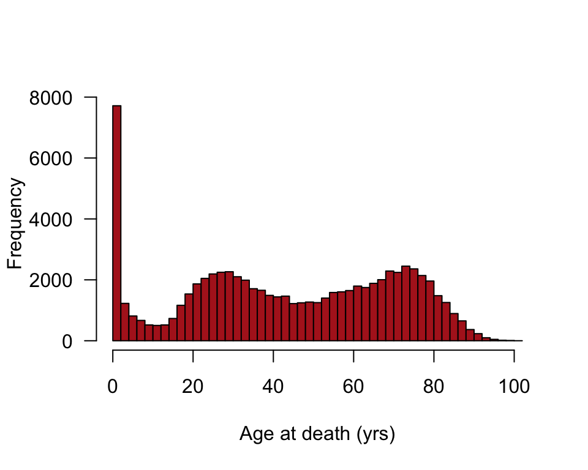
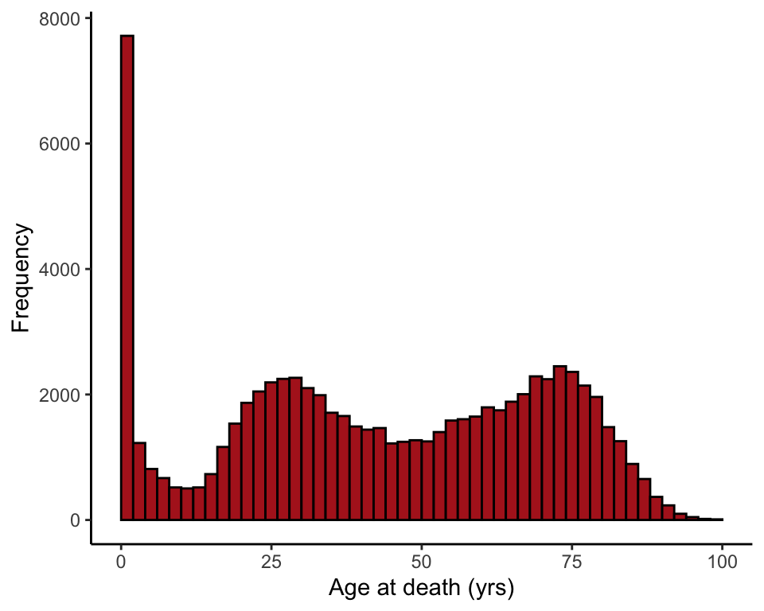
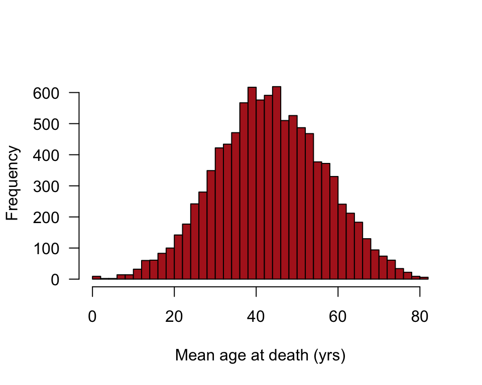
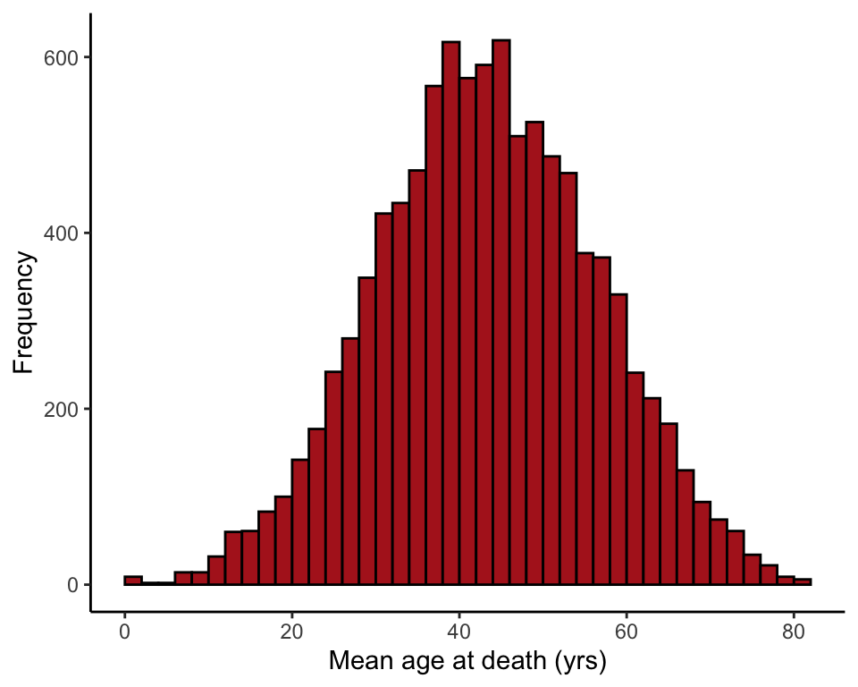

R code for example in Chapter 10:
The normal distribution
We used R to analyze all examples in Chapter 10. We put the code here so that you can too.
Also see our lab on the normal distribution using R.
New methods on this page
-
Probabilities under the normal curve:
pnorm(157.5, mean = 177.6, sd = 9.7) -
Other new methods:
-
Normal approximation to a binomial distribution.
Load required packages
We’ll use the ggplot2 add on package to make graphs.
library(ggplot2)Example 10.4. Small step for man?
Calculate probabilities under the normal curve.
Adult men
The command pnorm(Y) gives the probability of obtaining a value less than Y under the normal distribution. Set the arguments mean = and sd = to the mean and standard deviate of the desired normal distribution.
Here are the calculations for adult men. The numbers here will be slightly different from those in the book because of roundoff errors.
Pr[Height < 157.5]
pTooShort <- pnorm(157.5, mean = 177.6, sd = 9.7)
pTooShort## [1] 0.01912503Pr[Height > 190.5]
pTooTall <- 1 - pnorm(190.5, mean = 177.6, sd = 9.7)
pTooTall## [1] 0.09177612Pr[Height < 157.5 or Height > 190.5]
pTooShort + pTooTall## [1] 0.1109012Adult women
Pr[Height < 157.5]
pTooShort <- pnorm(157.5, mean = 163.2, sd = 10.1)
pTooShort## [1] 0.2862558Pr[Height > 190.5]
pTooTall <- 1 - pnorm(190.5, mean = 163.2, sd = 10.1)
pTooTall## [1] 0.003436144Pr[Height < 157.5 or Height > 190.5]
pTooShort + pTooTall## [1] 0.2896919Figure 10.6. Spanish flu
Demonstration of the central limit theorem, using the distribution of sample mean age at death in samples from a highly non-normal distribution.
Read and inspect the data.
flu <- read.csv(url("https://whitlockschluter3e.zoology.ubc.ca/Data/chapter10/chap10e6AgesAtDeathSpanishFlu1918.csv"), stringsAsFactors = FALSE)
head(flu)## age
## 1 0
## 2 0
## 3 0
## 4 0
## 5 0
## 6 0Histogram
Visualizing the frequency distribution of ages at death in Switzerland in 1918 during the Spanish flu epidemic.
hist(flu$age, right = FALSE, col = "firebrick", breaks = seq(0,102,2),
xlab = "Age at death (yrs)", las = 1, main = "")
or
ggplot(flu, aes(x = age)) +
geom_histogram(fill = "firebrick", col = "black", binwidth = 2,
boundary = 0, closed = "left") +
labs(x = "Age at death (yrs)", y = "Frequency") +
theme_classic()
Demonstrate central limit theorem
We treat the age at death measurements from Switzerland in 1918 as a population. Then we take a large number of random samples, each of size \(n\), from the population of age at death measurements and plot the sample means.
Note: your results won’t be the identical to the corresponding panel in Figure 10.6-2, because 10,000 random samples is not large enough for extreme accuracy.
The code below is for \(n = 4\). Change \(n\) to another number and rerun to see the effects of sample size on the shape of the distribution of sample means.
n <- 4
results <- vector()
for(i in 1:10000){
AgeSample <- sample(flu$age, size = n, replace = FALSE)
results[i] <- mean(AgeSample)
}Histogram of sample means
hist(results, right = FALSE, breaks = 50, col = "firebrick", las = 1,
xlab = "Mean age at death (yrs)", ylab = "Frequency", main = "")
or
ggplot(data.frame(results), aes(x = results)) +
geom_histogram(fill = "firebrick", col = "black", binwidth = 2,
boundary = 0, closed = "left") +
labs(x = "Mean age at death (yrs)", y = "Frequency") +
theme_classic()
Example 10.7. Dead bug
Normal approximation to the binomial distribution applied to the cricket preference of the brown recluse spider.
Normal approximation
The below differs slighty from the number in the book because of roundoff.
spiderProb <- 1 - pnorm( (30 + 1/2 - 41 * 0.5) / sqrt(41 * 0.50 * 0.5))
Pvalue <- 2 * spiderProb
Pvalue## [1] 0.001787289Compare with exact result
Compare with the exact result obtained when using the binomial distribution, dbinom(), which we encountered in the Chapter 7 R page.
2 * sum( dbinom(31:41, size = 41, prob = 0.5) )## [1] 0.001450491You can also use pbinom().
2 * (1 - pbinom(30, size = 41, prob = 0.5))## [1] 0.001450491